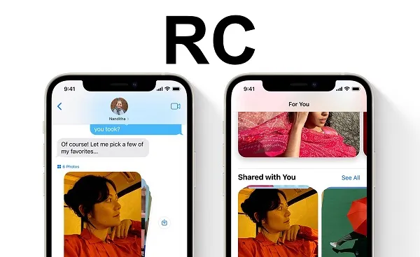

Apple phát hành iOS 15.5 RC sửa lỗi và cải thiện hiệu suất
Apple ngày hôm nay đã chính thức giới thiệu bản cập nhật iOS 15.5 RC dành cho nhà phát triển và người dùng đăng ký trải nghiệm. Được biết, phiên bản này Táo Khuyết sẽ tập trung vào sửa lỗi và cải thiện hiệu suất cho các mẫu iPhone đời cũ. Cùng ShopDunk tìm hiểu và cập nhật nhé!
Hướng dẫn cập nhật iOS 15.5 RC
Hiện tại, iOS 15.5 RC đã có sẵn cho các nhà phát triển cũng như những người người tham gia chương trình public beta của Apple. Dự kiến, phiên bản chính thức của các hệ điều hành này sẽ tung ra cho người dùng iPhone trong tuần tới.
Hướng dẫn cập nhật iOS 15.5 RC
Các nhà phát triển và những người tham gia chương trình public beta của Apple đã có thể tải xuống bản cập nhật iOS 15.5 RC thông qua đường OTA. Như thường lệ, nếu bản cập nhật không xuất hiện ngay lập tức để tải xuống thì hãy tiếp tục kiểm tra, vì đôi khi mất vài phút để Apple phát hành cho tất cả những người đã đăng ký.
Bản cập nhật sửa lỗi và cải thiện hiệu suất
Được biết, iOS 15.5 là các bản cập nhật nhỏ so với các bản phát hành iOS 15 trước đó và có một số thay đổi hạn chế. Dưới đây là ghi chú phát hành chính thức của Apple cho bản cập nhật:
iOS 15.5 bao gồm các cải tiến và sửa lỗi sau:
- Wallet hiện cho phép khách hàng Apple Cash gửi và yêu cầu tiền từ thẻ Apple Cash của họ.
- Apple Podcasts bao gồm một cài đặt mới để giới hạn các tập được lưu trữ trên iPhone của bạn và tự động xóa các tập cũ hơn.
- Khắc phục sự cố nơi tự động hóa gia đình, được kích hoạt bởi những người đến hoặc rời đi, có thể bị lỗi.
Bản cập nhật sửa lỗi và cải thiện hiệu suất
Xem thêm: Mách bạn 3 cách chống mất trộm iPhone cực hiệu quả
Hiện vẫn chưa rõ những tính năng mới mà iOS 15.5 RC mang lại nhưng đây là bản cập nhật tập trung vào sửa các lỗi còn tồn đọng cũng như cải thiện hiệu năng các thiết bị cũ để mang đến trải nghiệm tốt hơn. Tuy nhiên bạn nên sao lưu dữ liệu trước khi cập nhật bản thử nghiệm này nhé!